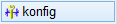
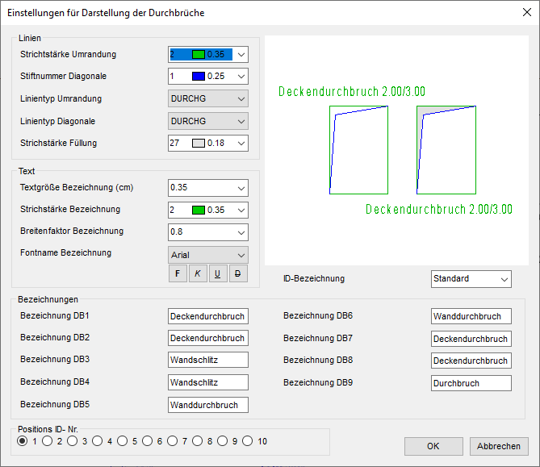

")
")
Stil-Konfiguration für die Darstellung von Durchbrüchen.
Öffnet den Dialog Einstellungen für Darstellung der Durchbrüche mit vordefinierten Durchbruchstilen.
Der Dialog enthält zehn vordefinierte Stile, die über die Positions ID-Nr. (im unteren Dialogbereich) ausgewählt werden können. Darstellung und Bezeichnung der gewählten Positions ID-Nr. werden im Vorschaubereich angezeigt.
Optionen im Dialog "Einstellungen für Darstellung der Durchbrüche"
 |
Positions ID-Nr.
Wählen Sie durch Anklicken der Optionsauswahl die Tabelle für den zu bearbeitenden Durchbruchstil aus.
ID-Bezeichnung
Bezeichnung, die in der Stil-Auswahl (im Funktionsbereich für Durchbrüche) angezeigt wird.
Voransicht
Hier werden die beiden unterschiedlichen Darstellungen, links ohne Füllung, rechts mit, dargestellt. Der Text am Durchbruch wird stellvertretend für DB1 und DB2 dargestellt.
Linien
Stiftnummer Umrandung
Wählen Sie die gewünschte Stiftnummer. Die tatsächliche Strichbreite wird in den Konfigurationen für die Ausgabeprofile (Drucken / Plotten / PDF) festgelegt.
Stiftnummer Diagonale
Wählen Sie die Stiftnummer für die Diagonalen bzw. den Schatten.
Linientyp Umrandung / Linientyp Diagonale
Klicken Sie einen Linientyp in der Auswahlbox an.
Stiftnummer Füllung
Wählen Sie den Stift für die Füllung. Sie müssen dafür in den Ausgabeprofilen entsprechende Festlegungen für die Breite und die Farbe treffen.
Text
Textgröße Bezeichnung (cm)
Klicken Sie eine der Größen in der Auswahl an oder geben Sie das gewünschte Maß direkt ein.
Stiftnummer Bezeichnung
Wählen Sie den Stift mit dem der Text geschrieben werden soll.
Breitenfaktor Bezeichnung
Tippen Sie den Breitenfaktor für den Text ein.
Fontname Bezeichnung
Wählen Sie den Schriftfont aus der Tabelle aus. Bei Windows® True Type Fonts können Attribute gewählt werden.
Bezeichnungen
Bezeichnung DB1 … DB9
Geben Sie Bezeichnungen oder Abkürzungen für die verschiedenen Typen an. Damit der Text von der Größe getrennt wird, geben Sie ein Leerzeichen ein.
Zugehörige Referenzen: